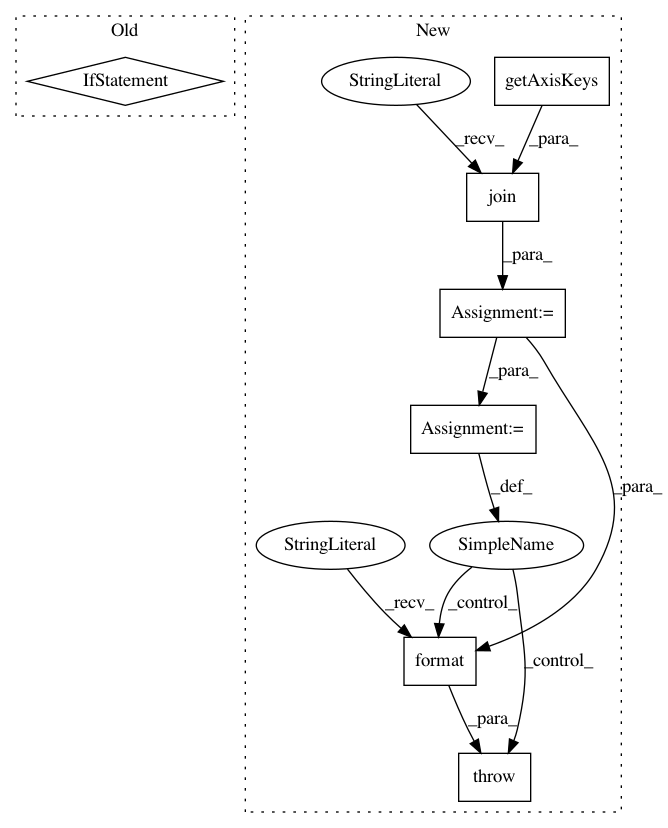

2f4c79e918f079e33120bbda62dbe20b69abb5b2,ilastik/applets/dataSelection/opDataSelection.py,OpDataSelection,setupOutputs,#OpDataSelection#,166
Before Change
self._NonTransposedImage.connect(providerSlot)
if self.force5d:
op5 = OpReorderAxes(parent=self)
op5.Input.connect(providerSlot)
providerSlot = op5.Output
self._opReaders.append(op5)
// If the channel axis is not last (or is missing),
// make sure the axes are re-ordered so that channel is last.
if providerSlot.meta.axistags.index("c") != len( providerSlot.meta.axistags )-1:
op5 = OpReorderAxes( parent=self )
keys = providerSlot.meta.getTaggedShape().keys()
try:
After Change
// Before we re-order, make sure no non-singleton
// axes would be dropped by the forced order.
output_order = "".join(self.forceAxisOrder)
provider_order = "".join(providerSlot.meta.getAxisKeys())
tagged_provider_shape = providerSlot.meta.getTaggedShape()
dropped_axes = set(provider_order) - set(output_order)
if any(tagged_provider_shape[a] > 1 for a in dropped_axes):
msg = "The axes of your dataset ({}) are not compatible with the axes used by this workflow ({}). Please fix them."\
.format(provider_order, output_order)
raise DatasetConstraintError("DataSelection", msg)
op5 = OpReorderAxes(parent=self)
op5.AxisOrder.setValue(self.forceAxisOrder)
op5.Input.connect(providerSlot)
In pattern: SUPERPATTERN
Frequency: 3
Non-data size: 7
Instances
Project Name: ilastik/ilastik
Commit Name: 2f4c79e918f079e33120bbda62dbe20b69abb5b2
Time: 2015-08-13
Author: bergs@janelia.hhmi.org
File Name: ilastik/applets/dataSelection/opDataSelection.py
Class Name: OpDataSelection
Method Name: setupOutputs
Project Name: ilastik/ilastik
Commit Name: 0c1057b85f6981f7262cdb52f89f2099b96f4891
Time: 2014-04-24
Author: webmaster@burgerdev.de
File Name: ilastik/applets/thresholdTwoLevels/_OpObjectsSegment.py
Class Name: OpObjectsSegment
Method Name: setupOutputs
Project Name: ilastik/ilastik
Commit Name: 0c1057b85f6981f7262cdb52f89f2099b96f4891
Time: 2014-04-24
Author: webmaster@burgerdev.de
File Name: ilastik/applets/thresholdTwoLevels/_OpGraphCut.py
Class Name: OpGraphCut
Method Name: setupOutputs